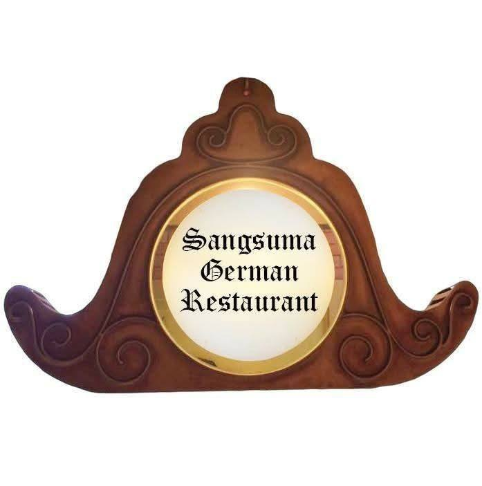
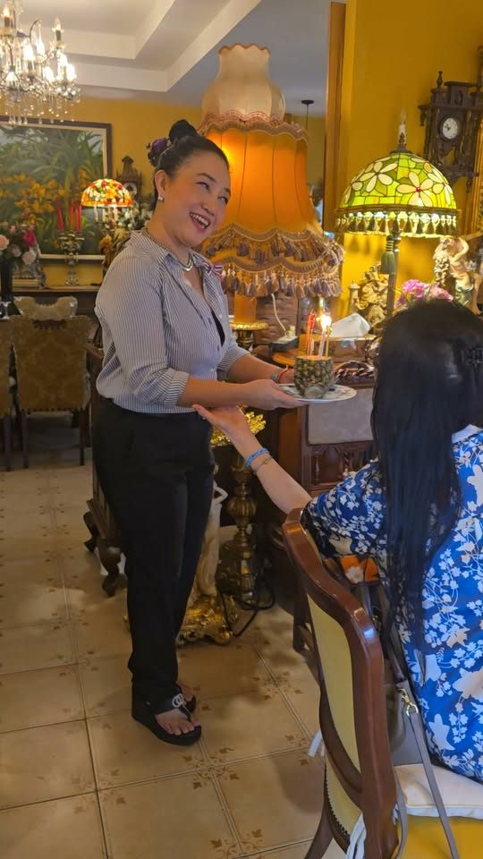

ร้านอาหารเยอรมัน แสงสุมา
Home-made German cooking by Chef Toom
อาหารเยอรมันโฮมเมด โดยเชฟตุ้ม
If you are looking for the finest German cuisine in Chiang Mai, we won't disappoint you. Our speciality, the pork knuckle, will make you love it at first bite. Loyal guests have been coming back for over 15 years.
Our signature dish
Cooked by Chef Toom
Private celebrations welcome


197 Moo 8, Thanawan 4 Village, Outer Ring Road (to City Hall), Chiang Mai 50300